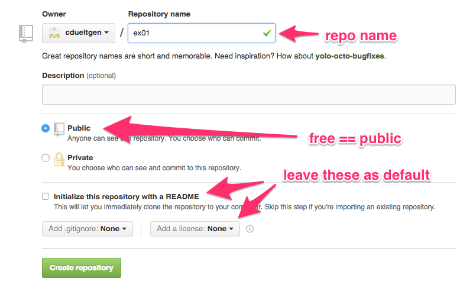

GitHub: Version Control in the Cloud¶
Using GitHub¶
How GitHub Is Normally Used¶
- Many developers working on the same project
- Each in a distinct working directory (on a distinct laptop)
How We’ll Use GitHub at Hackbright¶
- One working directory (paired workstation!)
- You both want to have in your own GitHub
Version Control in the Cloud¶
Why Do We Use Version Control?¶
- Track changes
- Look at older revisions
- Revert to early revision
- Share code/collaborate easily
- Save your bacon when you break something
Git is a program, GitHub is a company¶
If you take nothing else away from this, make it that.
GitHub is website that allows you to store your local repository in the cloud.
In order to put your local repository in the cloud, you need to make a “remote”.
Example time!¶
Step 1: Log in to your GitHub account¶
and go to the Repositories tab
Step 2: Create a new repo¶

Step 3: Give it a name¶
Rinse. Repeat.¶
Do this for both members of your pair before you move on. An incognito window is great for logging in to both GitHub accounts at the same time.
Step 4: Connect your new remote¶

Because we are sharing one local repo to two remotes, use your GitHub login instead of “origin”.
$ git remote add cdueltgen https://github.com/cdueltgen/ex01.git $ git remote add joelburton https://github.com/joelburton/exercise01.git $ git push cdueltgen master $ git push joelburton master
Step 5: Keep Working!¶
- Push will push ALL your commits to the remote
- Push when you’re going to be away from your computer
- Push when you need to move to a different computer
Woohoo! It worked! Now What?¶
Let’s look around¶

Clone it to a new location¶
Look for the bit in the lower right that says “HTTPS clone URL” and hit the clipboard icon to copy it to your clipboard.
$ git clone https://github.com/cdueltgen/Exercise01.git
This will create a new Working Directory called, in this case, Exercise01.
Gotchas¶
- Don’t clone into an existing working directory (git status, amirite?)
- Only need to clone once in a given location
- git clone sets up the necessary remote for you, but calls it “origin”
- Your code is now public
- To check what git thinks the remote(s) is(are):
$ git remote -v
Editing files on GitHub¶
BE CAREFUL!
If you edit a file on GitHub (you clicked on that tempting green button that says “add a README”, didn’t you?), you must keep that in sync with your local copy (your Working Directory).
Go to your local Working Directory and
$ git pull
Try not to edit code on GitHub. This can cause something called a Merge Conflict. Keep your local and remote in sync as much as possible.
Congratulations!¶
You are now a git and GitHub master. Go forth and git.